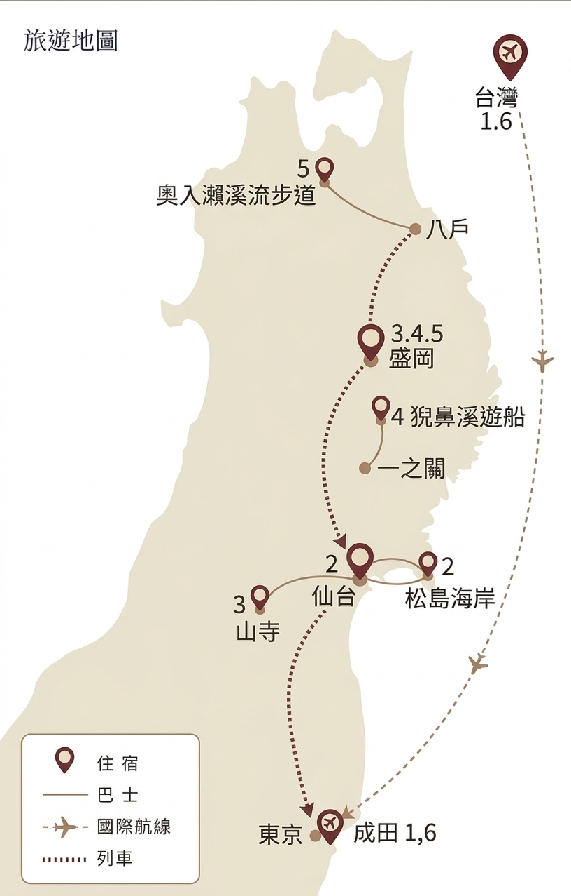

一看就懂
旅遊地圖
路線由南往北：上野 → 仙台／松島／山寺 → 盛岡，再往猊鼻溪與奧入瀨，最後從盛岡回成田。

D1
松山 → 羽田 → 上野
中午抵羽田，傍晚上野辦 PASS、逛藥妝。
D2
上野 → 仙台 → 松島
はやぶさ7號到仙台，仙石線去松島灣與瑞巖寺，夜宿仙台。
D3
仙台 → 山寺 → 盛岡
仙山線上山寺爬石階，傍晚はやぶさ45號到盛岡。
D4
盛岡 → 猊鼻溪
上午城跡公園，10:08 新幹線到一ノ關，下午舟下り後回盛岡。
D5
奧入瀨・十和田湖
08:50 到八戶，巴士進溪谷健行，晚上回盛岡。
D6
盛岡 → 成田 → 桃園
07:37 はやぶさ6號進東京，N'EX 到成田搭 CI101。